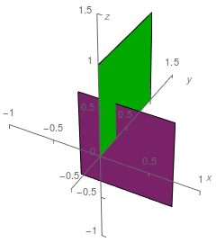

给定 $n$ 个三维空间中的边长相等的正方形，边平行于坐标轴，所有正方形的边界两两不相交。
定义两个正方形 $a, b$ 是 "不可分离的"，如果不存在一种连续的方式将 $b$ 平移到无穷远，且过程中不与 $a$ 相交。
设所有正方形的集合为 $S$，问是否能将 $S$ 划分为 $A, B$，满足 $A \cap B = \varnothing; A \cup B = S; A, B \neq \varnothing$，且对 $\forall a \in A, b \in B$，$a, b$ 均是 "不可分离的"？
第一行包含一个正整数 $T$，表示数据组数。
对于每组数据，第一行包含一个正整数 $n$ ($\sum n \leq 10^6$)，表示正方形的数量。
接下来 $n$ 行，每行六个整数 $x_1, y_1, z_1, x_2, y_2, z_2$，描述一个正方形的一对对角线的端点。由于正方形的边平行于坐标轴，因此这样的正方形是唯一确定的。
对于每组数据，如果存在满足条件的划分方式，则输出一行 YES，否则输出 NO。
考虑建图，对于 $a, b \in S$，若 $a, b$ 不是 "不可分离的"，则连接一条 $\left( a, b \right)$ 的无向边。
于是划分的 $A, B$ 就需要满足 $A, B$ 之间无边相连。如果最终图 $G = \left( S, E \right)$ 连通，则这样的非空 $A, B$ 显然不存在；否则一定存在。因此问题被转化为了判定 $G$ 是否连通。
对于一个正方形，考虑它所在平面的法向量，可知它一定平行于一条坐标轴 ($x$ 轴，$y$ 轴或 $z$ 轴)。我们根据法向量的方向，将这些正方形分为三类：$S_x, S_y, S_z$，分别表示法向量平行于 $x$ 轴、$y$ 轴、$z$ 轴。
现在任取 $a, b \in S_x$，可以发现这两个正方形 (所在平面) 是平行的，因此它们不可能是 "不可分离的"。从而 $G \left[ S_x \right]$ 导出完全图，$G \left[ S_y \right], G \left[ S_z \right]$ 同理。
因此，$G$ 至多只有三个连通分量。我们只需判断不同连通分量之间是否有连边即可。
以 $\left( S_x, S_y \right)$ 为例。这两个连通分量之间没有边，当且仅当每个法向量平行于 $x$ 轴的正方形和每个法向量平行于 $y$ 轴的正方形都是 "不可分离的"。
考察 $a \in S_x, b \in S_y$：不妨设正方形的边长为 $1$，$a$ 的一对对角线的坐标为 $\left( 0, 0, 0 \right)$ 和 $\left( 0, 1, 1 \right)$，$b$ 的一对对角线的坐标为 $\left( x, y, z \right)$ 和 $\left( x + 1, y, z + 1 \right)$。
若 $a, b$ 是 "不可分离的"，则 $b$ 至少有一条边穿过 $a$，分两种情况讨论：
综上，(在满足所有正方形不相交的条件下) $a, b$ 是 "不可分离的"，当且仅当 $$ \color {red} {-1 \leq x \leq 0 \wedge 0 \leq y \leq 1 \wedge -1 \leq z \leq 1} \tag 1 \label 1 $$
那么当 $a$ 的一对对角线的坐标为 $\left( x_0, y_0, z_0 \right)$ 和 $\left( x_0, y_0 + 1, z_0 + 1 \right)$，那么 $\eqref 1$ 式可以推广为 $$ \color {fuchsia} {x_0 - 1 \leq x \leq x_0 \wedge y_0 \leq y \leq y_0 + 1 \wedge z_0 - 1 \leq z \leq z_0 + 1} \tag 2 \label 2 $$
我们需要对 $\left| S_x \right| \left| S_y \right|$ 对 $a, b$ 进行检验，因此需要将上式进行优化。观察可知，对于一组 $\left( x_0, y_0, z_0 \right)$，上式其实对 $x, y, z$ 产生了一个长方体的限制，而不同的 $a$ 就相当于产生了多个长方体的限制。于是每个 $b = \left( x, y, z \right)$ 就需要在所有长方体的交中。
而长方体的交仍然是长方体 (或空集)，因此不难快速判断。
综上，我们可以在 $O \left( \left| S_x \right| + \left| S_y \right| \right)$ 的时间内完成 $S_x, S_y$ 两连通分量之间是否有边的判定，同理可以完成另外两组判定，故总时间复杂度 $O \left( n \right)$。
#include <bits/stdc++.h>
#define EB emplace_back
using std::cin;
using std::cout;
using std::vector;
const int N = 1000054;
struct vec3 {
int x, y, z;
vec3 (int x0 = 0, int y0 = 0, int z0 = 0) : x(x0), y(y0), z(z0) {}
};
int n, nX, nY, nZ, a;
vector <vec3> C[3];
inline void up(int &x, const int y) {x < y ? x = y : 0;}
inline void down(int &x, const int y) {x > y ? x = y : 0;}
inline int min(const int x, const int y) {return x < y ? x : y;}
bool check() {
int x_min, x_max, y_min, y_max, z_min, z_max;
x_min = y_min = z_min = INT_MIN, x_max = y_max = z_max = INT_MAX;
for (const vec3 &v : *C)
up(x_min, v.x - a), down(x_max, v.x),
up(y_min, v.y), down(y_max, v.y + a),
up(z_min, v.z - a), down(z_max, v.z + a);
for (const vec3 &v : C[1])
if (!(y_min <= v.x && v.x <= y_max && z_min <= v.y && v.y <= z_max && x_min <= v.z && v.z <= x_max)) return false;
return true;
}
void work() {
int i, b, x1, y1, z1, x2, y2, z2, mask = 0;
cin >> n, a = -1, C->clear(), C[1].clear(), C[2].clear();
for (i = 0; i < n; ++i) {
cin >> x1 >> y1 >> z1 >> x2 >> y2 >> z2;
b = abs(x1 - x2) + abs(y1 - y2) + abs(z1 - z2);
if (~a) assert(a == b);
else a = b;
if (x1 == x2) C->EB(min(x1, x2), min(y1, y2), min(z1, z2)), mask |= 2;
else if (y1 == y2) C[1].EB(min(y1, y2), min(z1, z2), min(x1, x2)), mask |= 4;
else if (z1 == z2) C[2].EB(min(z1, z2), min(x1, x2), min(y1, y2)), mask |= 1;
}
assert(!(a & 1)), a /= 2;
if (!(mask & (mask - 1))) mask = 0;
for (b = i = 0; i < 3 && mask; ++i) {
if (!check()) mask &= 1 << i;
std::rotate(C, C + 1, C + 3);
}
cout << (mask ? "YES\n" : "NO\n");
}
int main() {
int T;
std::ios::sync_with_stdio(false), cin.tie(NULL);
for (cin >> T; T; --T) work();
return 0;
}
坑1：$S_x, S_y, S_z$ 有可能为空集，此时连通分量总数不是 $3$。
坑2：可以将三类正方形的坐标轮换存储 (见代码第 41 ~ 43 行)，这样 rotate 后就可以重复调用函数了。